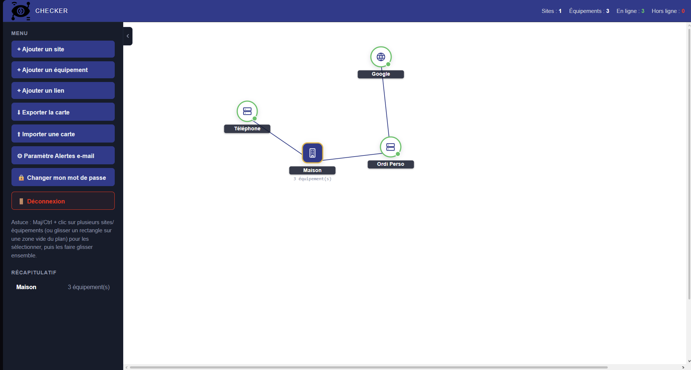

Checker
Un outil de supervision qui permet de suivre l'état de plusieurs machines informatiques.
- StatutEn cours
- ContexteStage à la mairie de Chevigny-Saint-Sauveur
- TechnologiesC++, HTML, CSS, JavaScript
Pourquoi ce projet ?
Checker est né pendant mon stage à la mairie de Chevigny-Saint-Sauveur, où je faisais du support technique et de la maintenance informatique. Il fallait pouvoir suivre facilement l'état de plusieurs machines, sans avoir à les vérifier une par une.
Exemple : une entreprise peut avoir plusieurs sites avec des machines toutes relier à un serveur. Checker permet de vérifier l'état de la connexion de toutes les machines à ce serveur.
Ce que fait Checker
- Envoi de ping régulier sur des machines afin de vérifier leur état
- Envoi automatique de mails de notification en cas de problème sur une machine
- Sécurité des données accrues

Comment ça marche
Checker fonctionne en envoyant des requêtes de ping régulières aux machines à surveiller. Si une machine ne répond pas, un message d'alerte est envoyé par email.
Les difficultés rencontrées
- La sécurité des données → Chiffrage des informations sensibles utilisations d'un mot de passe
- Le support technique → création de l'application en SaaS afin de faciliter l'utilisation
Ce que j'ai appris
Ce projet m'a appris à concevoir une application web complète, en gérant à la fois le côté client et serveur. J'ai également développé des compétences en matière de sécurité des données et d'optimisation des performances. Cela m'a permis d'apprendre le langage de programmation C++ et les principes de développement web avec l'aide de la bibliothèque httplib.
Et maintenant ?
Je travaille à une version open source de Checker, utilisable en dehors de la mairie.